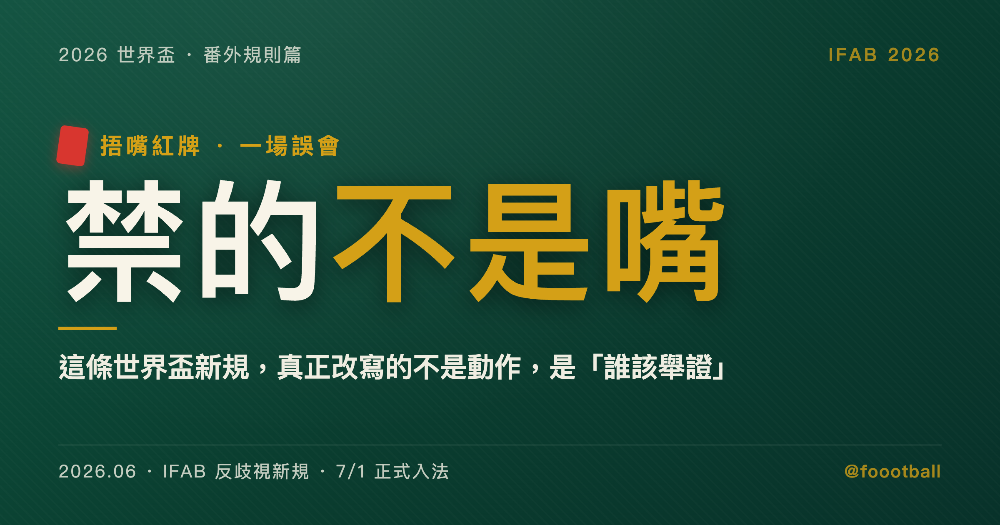

捂嘴就紅牌？這條世界盃新規，真正改寫的不是動作，是「誰該舉證」
並非『捂嘴就紅牌』。IFAB 新規限定在『與對手的對抗性衝突』中用手或球衣遮嘴，裁判『可以（may）』出紅牌——是裁量而非自動，要拆的是用捂嘴掩蓋歧視辱罵的那層掩護，不是捂嘴這個動作本身。

2026 年 2 月，里斯本，光明球場。歐冠淘汰附加賽首回合，皇家馬德里作客本菲卡。
第 50 分鐘，皇馬的巴西前鋒維尼修斯（Vinícius Júnior）進球慶祝，看台飛來水瓶。本菲卡的阿根廷邊鋒普雷斯蒂安尼（Gianluca Prestianni）上前，兩人爆發口角。爭執之中，普雷斯蒂安尼拉起紅色球衣，遮住自己的嘴，對著維尼修斯說了些話。
維尼修斯當場激動地向法籍主裁勒特西耶（François Letexier）投訴，指控對方用西班牙語連說了 5 次「mono（猴子）」 — 一句帶有種族歧視意味的辱罵。比賽中斷了約 10 分鐘，裁判啟動了反歧視標準程序。
然後呢？然後，當下沒有因為這項種族歧視指控出現任何一張紅牌。普雷斯蒂安尼捂著嘴，現場無從當場認定，而後續的調查也一路卡在證據門檻上。一個被指控的歧視行為，就這樣被一隻手擋住了去路。維尼修斯後來在社群上公開譴責：種族主義者都是懦夫，他們需要把球衣塞進嘴裡。那一刻的無力感，不只屬於他一個人 — 它暴露的是整套反歧視機制的一個老問題：你看得到嘴在動，卻證明不了嘴說了什麼。
幾個月後，足球規則的制定者 IFAB（國際足球協會理事會）通過了一條新規，外界很快就把它戲稱為「捂嘴紅牌」。各地的標題寫得驚悚：世界盃新規太狠，比賽中捂嘴說話直接紅牌罰下。這個版本傳得又快又廣，因為它好懂、好嚇人、也好下標；一時之間，彷彿球員只要在場上摸個臉、擋個嘴，就要被趕出場。但越是這樣一句話就能說完的規則，越值得停下來看清楚它到底寫了什麼。
但這是一場誤會。這條規則真正在動的，從來不是嘴。
它不是在禁捂嘴
先把規則本身講清楚，因為幾乎所有恐慌都來自略過了它的前提。
IFAB 通過的條文，措辭其實非常謹慎：在賽事主辦方的裁量下，球員在與對手的「對抗性衝突（confrontational situation）」中，若用手、手臂或球衣遮住嘴巴，裁判「可以（may）」對他出示紅牌。
請注意這段話裡的三道閘門，每一道都直接否定了「捂嘴就紅牌」的粗暴結論。
第一道，是「對抗性衝突」這個前提。它框死了規則的適用場合 — 不是任何時候捂嘴，而是限定在你正跟對手起衝突、火氣上來的那一刻。足球場上充滿正當的捂嘴：罰自由球前掩著嘴佈置戰術，怕對方陣營的唇語專家解讀；或者跟同俱樂部、這場各為其主的對手寒暄兩句。這些，規則完全不碰。FIFA 裁判委員會主席科里納（Pierluigi Collina）向媒體釋疑時講得很白：如果雙方只是善意交談，裁判不會做任何處分。
第二道，是那個「可以」。條文用的是「may be sanctioned（可以被處罰）」，不是「must be sanctioned（必須被處罰）」。一字之差，意思天差地遠：它給了裁判極大的裁量空間，要不要出牌，由裁判依當下的氣氛、雙方的情緒、衝突的升級程度綜合判斷。它不是一台只要偵測到捂嘴就自動吐紅牌的機器。
第三道，也是最關鍵的一道：這條規則打擊的目標，從頭到尾都不是「捂嘴」這個動作，而是「在衝突中用捂嘴去掩蓋歧視性辱罵」的那層意圖。過去太多次，施暴的一方就是靠著手或球衣擋住嘴，成功躲過了賽後根據轉播畫面做的唇語鑑定，讓被辱罵的人求訴無門。新規要拆的，正是這層物理掩護。
但這三道閘門，也把一個難題丟回給了裁判。衝突發生時，裁判第一時間想做的通常是把人分開、別讓肢體升級；現在他還得分神去盯涉事球員嘴邊那零點幾秒的小動作，並在當場判斷：這個捂嘴，是掩飾辱罵，還是只是劇烈喘氣、下意識抹了把臉？這條界線落在幾分之一秒裡，模糊得很，未來注定是爭議的高發地帶。
把三道閘門擺在一起，結論很清楚：規則動的不是動作，是那隻手背後的東西。它要逼的，是讓衝突雙方在鏡頭下把話攤開來說。
真正動到的，是「誰該舉證」
如果只到這裡，這還只是一條反歧視的技術性補丁。它真正值得寫下來的地方，藏在更底層 — 它悄悄鬆動了一條足球向來很少碰的原則：舉證責任，也就是「誰該拿出證據」。
過去，無論在法庭還是在體育紀律體系，預設都是「無罪推定」：要罰一個人，是指控的一方要拿出證據 — 清楚的錄音、無死角的影片、唇語專家的鑑定報告。拿不出來，就罰不了。里斯本那一夜的種族歧視指控之所以無疾而終，正是這套邏輯的結果：捂著的嘴讓證據消失，於是這一項就停在了原地。
新規的邏輯，恰恰相反。推動它的 FIFA 主席因凡蒂諾（Gianni Infantino），對 Sky News 把這套想法直白地說了出來：「我實在不懂，如果你沒有什麼要隱瞞的，說話的時候為什麼要把嘴遮起來？」
這句話背後的邏輯，已經很接近一種「有罪推定」。在對抗性衝突裡，球員一旦選擇捂嘴，等於在規則上把自己推到了比較難自證清白的位置。裁判不必再像過去那樣，百分之百確認你到底吐出了哪個侮辱性詞彙；依照條文給的裁量空間，只要他認定你在衝突中做了「惡意隱蔽」這個動作、又結合當下情境，就可能構成出牌的理由。
換個角度說，過去是「除非你能證明我說了種族歧視的話，否則我沒事」；新規想推的方向，比較接近「你得解釋你為什麼要捂嘴，否則這個動作本身就會對你不利」。被打量的對象，從「那句話」悄悄移到了「那隻手」。而手的動作，比話容易看見得多 — 這正是規則設計的巧妙，也是它讓人不安的地方。它把一件難以證明的事（你說了什麼），轉換成一件一眼可辨的事（你遮了沒有），代價是這兩件事其實不完全等價：遮嘴的人不一定在罵人，罵人的人也不一定遮嘴。
要說清楚的是，IFAB 的正式條文寫的仍是「賽事主辦方裁量」「可以(may)」，並不是一套把舉證責任完整倒過來的紀律程序。但因凡蒂諾的這套邏輯，確實把「不利推定」往前挪到了「捂嘴」這個動作本身 — 它在意的，不再只是「你說了什麼」能不能被證明，而是「你為什麼要遮」。你可以說這是反歧視決心的展現，也可以說這是把懷疑的重量，從指控方往被指控方挪了一點。兩種讀法都站得住，而規則的天平，確實往後者傾了一些。
這也呼應了 FIFA 這屆對「鏡頭」的整體態度。除了捂嘴紅牌拿掉物理掩護，世界盃還會導入裁判視角攝影（body camera）這類技術，讓場上的衝突更難完全躲進鏡頭的死角。不過要提醒一句：目前公開的資訊，這類攝影比較偏向轉播與觀眾視角，能不能拿來補足語音層面的證據，並不適合過度推論。真正改變遊戲規則的，仍是捂嘴紅牌本身 — 它把「隱藏」這件事，從一個幾乎零成本的動作，變成一個要冒風險的動作。
值得一提的是，因凡蒂諾在揮舞重罰的同時，也想推一種「文化轉變」：他建議，如果球員在「憤怒的瞬間」說錯了話，但事後願意站出來公開道歉、承擔責任，那後續的處置可以有所不同。重罰與坦白從寬並行 — 這套雙軌，透露出 FIFA 想做的不只是嚇阻，還想重塑球員開口前的那一秒。
為什麼是現在：那個抓不到的瞬間
規則的任何一次大改，背後往往都站著一樁具體事件。把 FIFA 推到這一步的，正是里斯本那一夜。而後來的調查結果，反而把開頭那個漏洞照得更清楚。歐洲足總的調查委員會經過漫長程序，最終認定：種族歧視的指控無法獲得證實（因為捂嘴，唇語專家拿不到確鑿證據），但普雷斯蒂安尼在衝突中使用了帶有恐同（homophobic）性質的侮辱言論成立，據此對他處以 6 場歐洲賽事停賽（其中 3 場緩刑 2 年）。普雷斯蒂安尼本人否認使用種族歧視語言，稱維尼修斯誤解了他以為自己聽到的話。FIFA 隨後介入，宣布把這紙禁令延伸到全球範圍，牽動了他的世界盃資格。
請看清楚這個結果的弔詭之處：一樁從種族歧視指控開始的衝突，最後連調查都無法在種族歧視這一項上定案 — 不是因為它一定沒發生，而是因為那隻手讓真相無從查起。對 FIFA 來說，這恰恰是最有說服力的理由：如果連事後的層層調查都被一個捂嘴動作擋住，那就必須在事發當下，直接剝奪這層掩護。
而且它不是孤例。就在同一段時間，非洲國家盃決賽爆發了塞內加爾因不滿判罰、集體走回場邊抗議的罷賽風波，賽後被非洲足協依規判負、剝奪冠軍。FIFA 以此為鑑，在同一批新規裡塞進了另一條鐵腕條款：擅自離場抗議的球員直接紅牌，導致比賽中斷的球隊原則上判負。兩樁事件、兩條新規，骨子裡是同一個念頭：把過去靠「事後再說」處理的失序，改成「當下就斷」。捂嘴紅牌不是單獨誕生的，它是 FIFA 這一輪「把模糊地帶一條條關掉」的紀律方向裡，最受矚目的一條支線。
時間點也要分清楚。這整批新規會在 2026 年 7 月 1 日正式寫進足球規則的條文，但包括捂嘴紅牌在內的多數措施，FIFA 已指定本屆世界盃自 6 月 11 日開賽起就在賽場上適用。換句話說，世界盃本身，就是這套規則大規模上場的第一個舞台 — 一條剛從爭議裡長出來的規則，要在全世界面前接受它的第一次實戰。
代價：寒蟬效應與被武器化的指控
任何把舉證責任倒過來的設計，都會帶來它自己的麻煩。要誠實看這條規則，就不能只看它想解決的問題，也得看它可能製造的問題。
第一個，是寒蟬效應。很多職業球員在漫長生涯裡，早就養成了開口就捂嘴的肌肉記憶 — 為了防戰術外洩，為了不被鏡頭斷章取義。在腎上腺素飆高的衝突裡，這個動作很可能出於本能而非惡意。新規之下，一個無意識的習慣，理論上就可能換來一張極刑般的紅牌。甚至有球迷半開玩笑地問：那如果只是想擋一下咳嗽呢？
第二個，更棘手 — 指控本身可能被當成武器。在白熱化的比賽裡，一名球員若刻意去激怒一個習慣摸臉、習慣捂嘴的對手，等對方一做出遮掩動作，他就可以誇張地向裁判投訴自己遭到歧視。在這種接近有罪推定的制度壓力下，裁判背著反歧視的巨大社會期待，很可能在證據不足時，仍然把對方罰下。一條為了保護弱勢而生的規則，存在被反過來利用的縫隙。
把這個縫隙放進一場淘汰賽末段，問題會更尖銳。比分膠著、雙方都在拚那顆決定晉級的進球，這時一張紅牌足以直接決定誰回家。裁判要在零點幾秒、在全場鼓譟與兩名球員的對峙裡，判斷一個捂嘴動作到底是惡意還是本能 — 而他知道，無論怎麼判，賽後都會有一方覺得被毀了。這不是說規則一定會被濫用，而是說：當你把「證明」的門檻降低，你同時也降低了「冤枉」的門檻，兩者是同一枚硬幣的兩面。
這也是代表全球球員的國際職業球員協會（FIFPro）的兩難所在。一方面，他們長年主張球場必須是對所有人、尤其是少數族裔的安全空間，堅決支持打擊歧視；另一方面，因凡蒂諾那套「不利推定」邏輯帶來的心理壓力，又實實在在地壓到了球員的辯護權上。如何在保護被辱罵者，與保障無心之失者的合法抗辯之間找到平衡，會是 FIFA 接下來幾年躲不掉的難題。可以想見，一旦世界盃上真的出現第一張有爭議的捂嘴紅牌、又連著後續的全球禁賽，球員工會與足球管理機構之間，可能迎來一場法律與公關上的角力。
這些風險不是用來否定規則的。它們只是說明：當一條規則選擇用「推定」來換「抓得到」，它就同時買下了「可能抓錯」的風險。值不值得，每個人心裡的那把尺不會一樣。
為什麼歐洲說不
最能說明這條規則有多有爭議的，不是球迷的反應，而是歐洲足總（UEFA）的態度。
儘管 IFAB 已經全票通過、FIFA 也確定在世界盃上採用，UEFA 卻明確表態：不會跟。要說清楚的是，IFAB 的條文是交由賽事主辦方裁量，並沒有強制所有賽事同步實施 — 這也正是 UEFA 能說不的空間所在。在自家管轄的男女歐冠、歐洲聯賽等俱樂部賽事裡，「對抗中捂嘴紅牌」與「抗議罷賽紅牌」都不會實行。這些由 FIFA 主導的規則變更，在 UEFA 的相關會議上，根本沒被排進議程。
這裡有個無法忽略的諷刺：催生捂嘴紅牌的那樁事件，本身就發生在歐冠 — UEFA 自己的賽場。漏洞在它家被照出來，它卻選擇按兵不動。
UEFA 沒有把話說滿。就公開資訊能確認的，是它決定先不採用，把這套新規列入觀察：先看世界盃執行得如何，相關會議也還沒把它排進議程，之後再決定要不要在歐洲賽季引進。至於背後的考量，一種合理的推測是執行成熟度與賽事風險 — 對歐冠這種商業價值極高的賽事，一次難以界定的捂嘴爭執若把一名巨星直接罰下、毀掉整場懸念，代價太大。但這層動機終究是推測，UEFA 真正攤在檯面上的態度，就是「先不跟、先看」。
而世界盃偏偏是一面放大鏡。這個系列稍早寫過 2026 世界盃的規模：48 支球隊、橫跨美國墨西哥加拿大三國、16 座主辦城市、不少場次落在高溫時段，是過去任何一屆都沒有過的關注度與比賽密度。把一條仍有爭議、仍要靠裁判臨場拿捏的新規，丟進這樣一個每個判罰都被幾十億雙眼睛盯著的舞台，本身就帶著風險：判得準，它會被記成反歧視的一塊里程碑；只要在關鍵一戰判錯一次，全世界也都會同步看到。UEFA 選擇先站在場邊看，FIFA 選擇先把球員、裁判和爭議一起推上場 — 兩家對「成熟度」的判斷，從一開始就不一樣。
往大了看，這場分歧也是 FIFA 與 UEFA 之間關於規則話語權的角力。FIFA 想藉世界盃這個四年一度的最高舞台，把自己的紀律價值觀推成全球標準；UEFA 則靠著全年無休、商業化最高的歐洲聯賽體系，保持著拒絕被牽著走的底氣。世界盃會是這套新規第一次大規模上場 — 也是它第一次接受全世界的檢驗。
那隻擋住嘴的手
回到里斯本那一夜。那隻拉起球衣、擋住嘴的手，在當時沒換來任何一張紅牌 — 種族歧視的指控被它擋住了去路，後續調查也始終卡在這道證據門檻上。
但從世界盃開賽的那一刻起，同樣一個動作的意義，會變得完全不一樣。它不再是一個能讓真相消失的安全動作，而是一個可能讓裁判直接掏出紅牌的高風險動作。FIFA 賭的是：當隱藏本身就要付出代價，球員會在情緒失控的邊緣，把那隻手放下來。
這條規則究竟會如願淨化球場上的語言暴力，還是會因為裁量的模糊、習慣的衝突、甚至被人惡意利用，而製造出比過去更難收拾的爭議？沒有人能先給出答案。
能確定的只有一件事：從世界盃的第一聲哨音起，球場上每一次衝突中舉起的手，都不再只是一個動作。它成了一個會被計入勝負的選擇。
常見問題
「捂嘴紅牌」是說比賽中捂嘴就會被罰下嗎？
不是。規則限定在「與對手的對抗性衝突」中遮嘴才適用，且條文用「可以（may）」而非「必須」，由裁判裁量。罰自由球前掩嘴佈置戰術、或與對手善意交談，都不在規範內（FIFA 裁判委員會主席科里納已釋疑）。
這條規則什麼時候開始適用？
整批新規 2026 年 7 月 1 日正式寫進足球規則，但包含捂嘴紅牌在內的多數措施，FIFA 已指定本屆世界盃自 6 月 11 日開賽起就在賽場適用——世界盃是它大規模上場的第一個舞台。
為什麼歐洲足總（UEFA）不採用？
IFAB 條文交由賽事主辦方裁量、未強制同步，UEFA 因此能說不。它在自家歐冠、歐聯等賽事不實行「對抗中捂嘴紅牌」，選擇先觀察世界盃執行情況再決定——儘管催生這條規則的事件正發生在歐冠賽場。